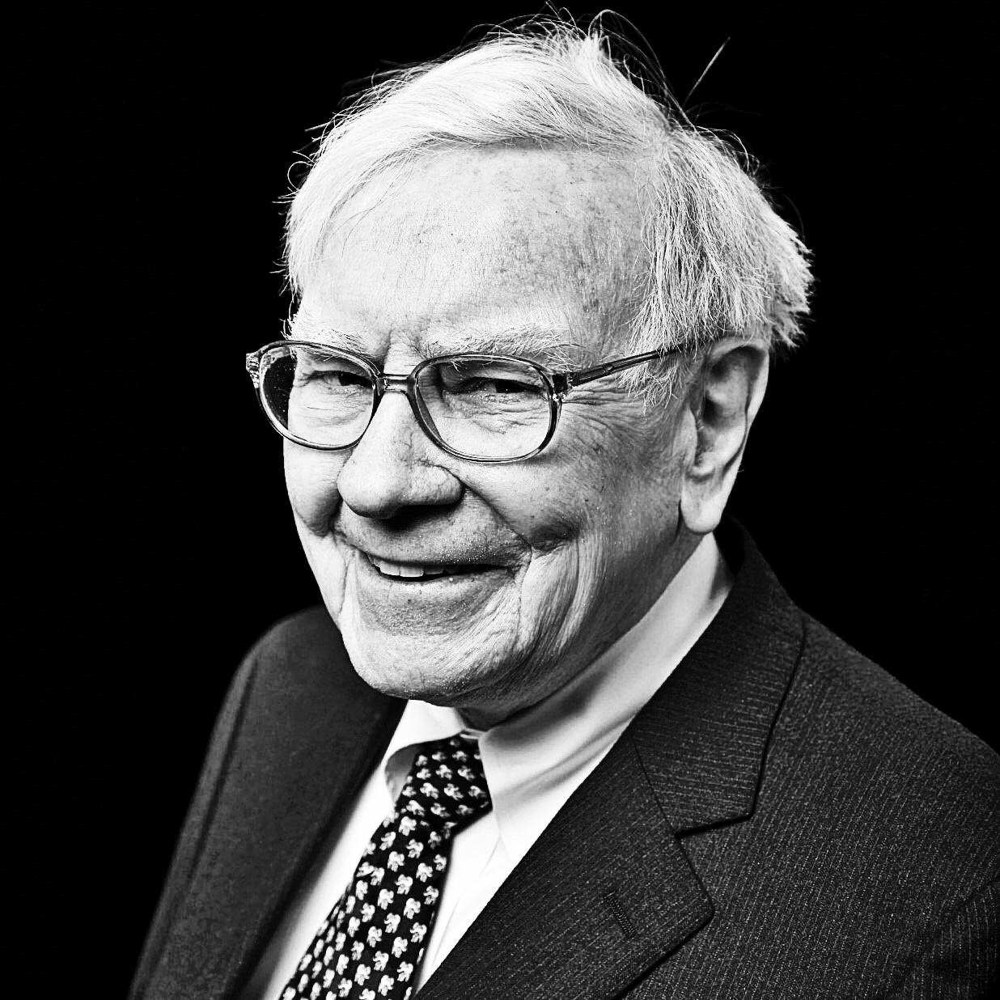

Philosophy is the foundation, process builds the returns, structure tilts the probability of repeated success in our favor
Economic Profits Drive Returns
Hover to exploreCompanies create shareholder value by generating robust economic returns and protecting their competitive advantages by strategic reinvestment:
Long Term Business Owner Mindset
Hover to exploreA business owner mindset allows a long-term perspective that reduces behavioral finance mistakes:
Consistent Process Improves the Probability of Success
Hover to exploreInvestment decisions are probabilistic. The investment process has been designed to tilt the odds of success in the clients' favor:
Consistent Process Improves the Probability of Success
Hover to exploreRisk management is fundamental to and integrated in our process:
Focus on what drives long-term business return
The best money managers maintain a disciplined focus on the investment process (not outcome). If the investment process is good, the favorable performance will follow.
Investment research should focus on the handful of business attributes that are most likely to drive shareholder value over time, and not simply collect data. An investment checklist improves focus on what is knowable and important.
Peer review improves decision-making by acting as a check and balance on our individual biases.
Active investing adds value across all funds (even underperforming ones) when only the best ideas are used as subset portfolios. Active share and long-term holding (low turnover) combined adds alpha.
Value investing prioritizes margins of safety to reduce downside risk and protect invested capital:

I try to invest in businesses that are so wonderful that an idiot can run them. Because sooner or later, one will.
– Warren Buffett